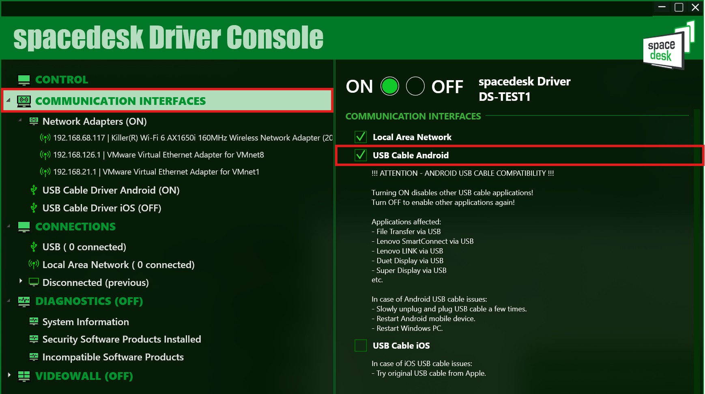
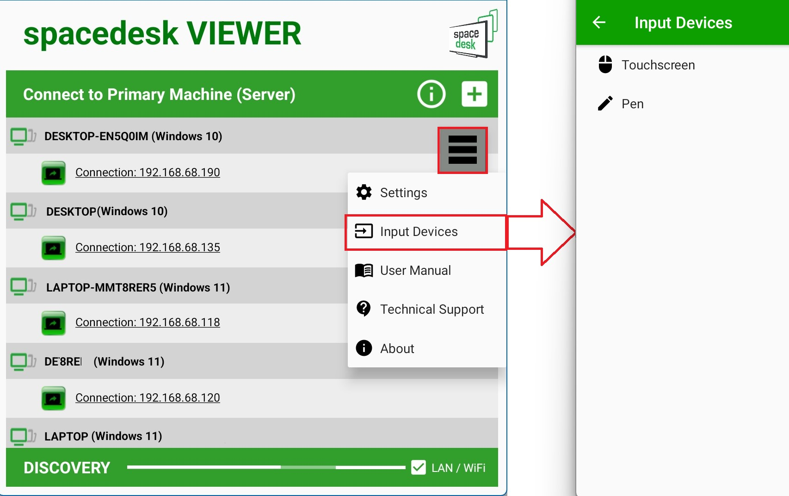

把旧平板接进日常双屏工作流，一条链走完从开机到下班
讲清怎么用 spacedesk 把闲置平板插进工位准备、会议记录、远程调试三条日常流程，省掉显示器钱和手动切换的麻烦。
我每天下班要做三件事：把工位恢复原状、把当天的调试笔记同步到飞书文档、把第二天要开的会议议程拉出来排顺序。以前这三件事之间有两次手动切换——主机屏幕上同时开着工程 IDE、飞书窗口和会议议程，挤来挤去拖窗口拖到烦。后来我用一个闲置了半年的安卓平板当副屏，这套流程从头到尾再没碰过窗口切换。
旧流程的断点在哪
先说说原来怎么干。工位上一台笔记本，屏幕 14 寸，工程 IDE 占满全屏才够写代码，飞书文档和会议议程只能在桌面上最小化。调试时要看日志，又得切到终端窗口，来回来去至少三次 Alt+Tab。更别扭的是我偶尔要出差，带上笔记本就意味着告别双屏——以前试过装远程桌面投屏，延迟能忍，但每次连上要手动输 IP、等扫描、输密码，三步才能进，人累的时候根本不想开。
真正让我下决心换方案的是上个月一次线上排障：我手里攥着手机远程登进主机，想同时看日志窗口和浏览器控制台，两只手在不同设备上来回点，差点漏看了关键报错。那天我意识到，我缺的不是"另一块屏幕"，而是"能嵌进现有节奏、几乎零心智负担的第二屏"。
新流程：spacedesk 塞进工位准备链
选 spacedesk官网 不是因为它功能最多，而是它在"自动连上"这件事上做得比别家顺手。现在我每天的工位准备流程是这样的：
- 按下主机电源；
- 拿起平板，打开查看器；
- 等两秒，副屏自动出现。
没有手动扫描、没有输 IP、没有等超时。这三秒省掉了以前每次开会前准备设备的那段空档——以前这段时间我得翻箱子找显示器线，现在平板本来就在桌上。
这套链路的核心是主机端的开机自启配合副屏端的两项设置。主机那边我开了自动启动勾选项，开机后服务直接处于可连接状态，不用手动拨开关。副屏那边我开了自动连到固定 IP 和断线自动找回。三项全开之后，整个链路没有一个手动步骤。

驱动从 官方下载 装上之后，链路物理层我选了 USB 直连而不是 WiFi。理由很简单：WiFi 会被家里其他设备占带宽，IDE 里高频打字时偶尔能感觉到延迟，USB 线插上之后这些问题全没了，而且还顺便给平板充电。唯一要注意的是 USB 通道的独占性——勾上之后平板的 USB 口就被 spacedesk 接管了，文件传输走不了 MTP。所以日常节奏是：传文件时把勾去掉一分钟，传完再勾回来，一秒的事。
链路里最容易断的两个环节
用了两个月，这套流程在两个地方踩过坑。第一个是"键盘打不了字"。平板接好了、画面也对，但在副屏上点开屏上键盘敲任何键都没反应。折腾了半天才发现，网络连接下远程键盘功能要求主机端开启密码保护和加密开关，不开就静默禁用。USB 直连不受这个限制，但我那次恰好是在 WiFi 环境下测的。记住这个规则之后，凡是遇到"副屏有画面但输入没反应"，第一反应就是去查加密开关，或者翻 spacedesk文档 对应章节排障，不用排查别的。
第二个环节是"偶尔自动重连不上"。平板放太久锁屏后再点亮，有时候会发现副屏没自动恢复。这个不是链路问题，是平板的电池优化把查看器进程杀掉了。解法是把 spacedesk 查看器加到平板的电池白名单里，禁止后台被清理。这一步做完之后再没出过类似问题。
反向输入这块我只用了触控和手写笔，键盘接的是实体蓝牙键盘。打长文本比如调试记录或会议纪要时，蓝牙键盘的效率比屏上虚拟键盘高一个量级，而且实体键盘走的也是远程通道——只要加密开着就能用，USB 直连的话连加密都省了。

这套流程省了什么、什么时候不划算
算一笔数：以前每次开会前准备设备平均花两分钟，现在三秒。每天至少一次这样的切换，一个月就是省出一小时多。调试时不用来回切窗口，思路不被打断的次数多了记不清，但印象最深的是上个月那次线上排障，只用一副屏同时盯日志和浏览器，没错过任何一条关键报错。
也有不划算的时候。如果你用的是公共主机或者笔记本经常被别人借，开着自启意味着这台机器在局域网内随时可被发现，这种场景应该关掉自启、配合密码保护手动开关。另外纯移动办公时带着一根 USB 线确实不方便，这种时候 WiFi 凑合一下也能顶。
总的来说，这套链把"双屏"从一个需要专门布线的硬件选择，变成了把闲置设备嵌进日常节奏的事。花在配置上的时间半天就够，之后每天省的那两秒，攒起来就不是小数。这篇里用到的配置方法和参数我也顺手整理了一份同步到了三个仓库，GitHub 上的原版 https://github.com/alipymanbu/APK/tree/main/%E6%AD%A3%E7%89%88/spacedesk 之外，国内访问更快的 Gitee 和 GitCode 镜像分别在 https://gitee.com/manbu1103/APK/tree/main/%E6%AD%A3%E7%89%88/spacedesk 和 https://gitcode.com/qq352325405/APK/tree/main/%E6%AD%A3%E7%89%88/spacedesk。